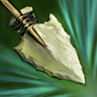
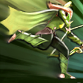
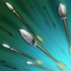

Evasive and swift, the nimble Windranger is always seeking the right angle to attack. Whether she's
clearing the way with a draw of her deadly powershot, or shackling enemies together to pepper them
with arrows, she's always on the move.
SHACKLESHOT
Shackles the target to an enemy unit or tree in a line directly behind it. If no unit or tree is
present, the stun duration is reduced to 0.8.
ABILITY:Unit Target
AFFECTS: Enemy Units
PIERCES SPELL IMMUNITY: No
DISPELLABLE:
Only Strong Dispels
SHACKLE DURATION:
2.0 / 2.6 / 3.2 / 3.8

POWERSHOT
Windranger charges her bow for up to 1.0 second for a single powerful shot, which deals more damage
the longer it is charged. The arrow damages enemies along its path. For each enemy that Powershot
hits, its damage is reduced by 20%.
ABILITY: Point Target
DAMAGE TYPE: Magical
PIERCES SPELL IMMUNITY: No
DAMAGE:
150 / 250 / 350 / 450
RANGE:
2600

WINDRUN
Increases movement speed and adds evasion from all physical attacks, while slowing movement of
nearby enemies.
ABILITY:No Target
PIERCES SPELL IMMUNITY:No
DISPELLABLE: Yes
MOVE SPEED BONUS: 60%
EVASION: 100%
ENEMY SLOW:
-15% / -20% / -25% / -30%

FOCUS FIRE
Windranger channels the wind to gain 475 additional attack speed against a single enemy unit or
structure, though with a reduction to her attack damage. Extra damage from secondary item effects is
not reduced.
ABILITY: Unit Target
AFFECTS: Enemy Units and Buildings
PIERCES SPELL IMMUNITY: Yes
DISPELLABLE: No
BONUS ATTACK SPEED: 475
-50% / -40% / -30%
DURATION:
20.0
POWERSHOT +1
Powershot now becomes global, but only hits heroes beyond its default range (max 1 hero). Impacted
heroes will be killed if they are under 13% after taking the impact damage. Lowers cooldown by 1.5
seconds.
Doto and the Doto Logo aren’t probably trademarks and/or registered trademarks of Sink Corporation. 2021
Sink Corporation, all rights reserved.